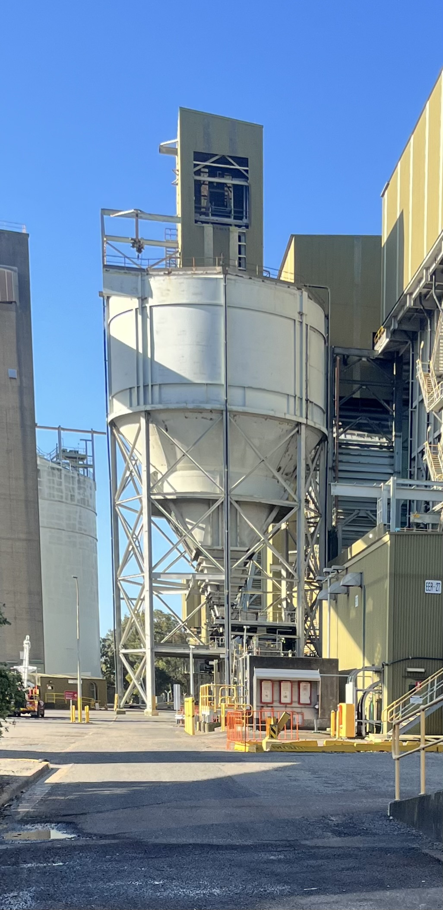
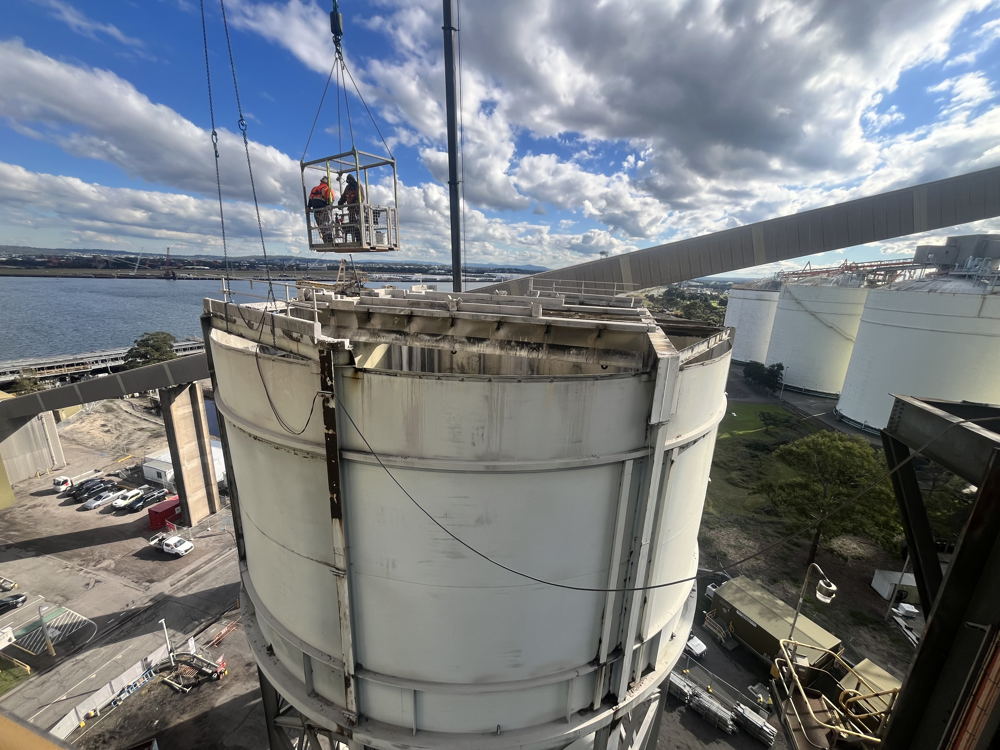
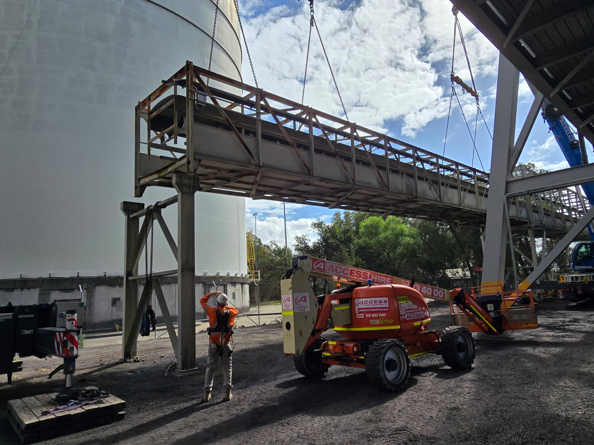
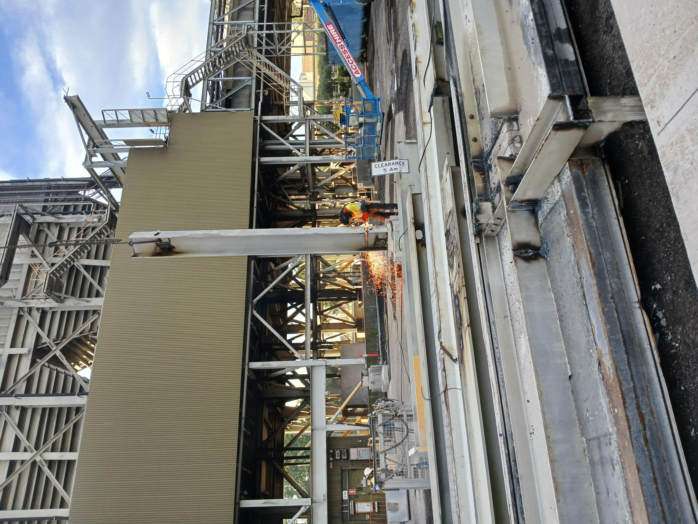

Project Overview
STRUKTURA Group was engaged by Port Waratah Coal Services (PWCS) to undertake the Stage 2 Wallarah Receival Deconstruction works at Kooragang Coal Terminal. The project involved the controlled removal of redundant coal handling infrastructure, including conveyor gantries, trestles, the transfer house, surge bin and associated structural components.
The works were completed within an active coal export terminal, requiring detailed demolition planning, engineered lift studies, operational isolations and careful coordination with surrounding infrastructure. A staged methodology was adopted to progressively dismantle major structural elements using mobile cranes, controlled cutting and mechanical demolition.
Removal of the redundant infrastructure eliminated risks associated with structural deterioration and reduced ongoing maintenance and monitoring requirements.
Key Features
- Stage 2 Wallarah Receival deconstruction
- Transfer house and concrete slab removal
- Surge bin wall, cone and ring beam dismantling
- Removal of Gantries 3, 4 and 5
- Dual-crane lifting operations
- Surge chute and hopper deconstruction
- Structural steel cutting and segmentation
- Live operational coal terminal environment
Project Gallery




Removal Methodology
Site Establishment & Planning
Site access, isolations, traffic management and exclusion zones were established before deconstruction. Detailed workpacks and crane lift studies defined the lifting arrangements, structural sequencing and safety controls for each stage of removal.
Transfer House & Concrete Slab Removal
The transfer house was progressively de-sheeted and dismantled. Concrete slabs at RL 40.7 were cut into individual sections and lifted by crane, followed by removal of the supporting internal structural beams. Additional cutting and separation works were undertaken where concealed connections and bonded Bondek sheeting were encountered.
Conveyor Gantry Removal
Gantries 3, 4 and 5 were progressively disconnected from their supporting trestles and adjoining structures. Engineered crane lifting arrangements, including dual-crane operations, were used to lower the gantries to ground level for subsequent sectioning and processing. Recorded lifted weights were approximately 25 t, 28.8 t and 33 t respectively.
Surge Bin, Chute & Hopper Deconstruction
The surge bin walls were divided into eight individual panels and progressively removed using crane-supported cutting and lifting operations. The lower chutes, hopper transition sections, upper cone and ring beam were then dismantled in controlled stages in accordance with the approved workpacks.
Support Structure Removal & Completion
Following removal of the main surge bin components, the remaining supporting steelwork was progressively disconnected and dismantled. Removed materials were lowered to ground level, sectioned for handling and transported from site, followed by final clean-up and demobilisation.

Have a Project in Mind?
Contact STRUKTURA Group to discuss demolition engineering, crane studies, lift planning and complex industrial deconstruction projects across Australia.
CONTACT US